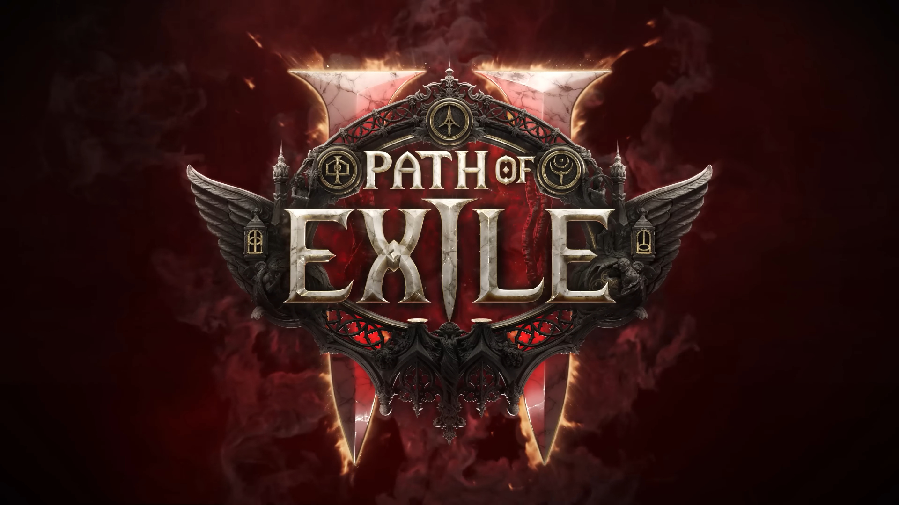

Path of Exile — это бесплатная онлайн-игра в жанре Action RPG, разработанная компанией Grinding Gear Games.
В течение 20 лет в Рейкласте не было никаких источников коррупции, но граф Огамский, соблазненный обещаниями власти, намерен использовать ее еще раз. Мертвые восстают, монстры мутируют, и безумие распространяется из этого нового Очага Коррупции. По пути вы столкнетесь со страшными монстрами, встретите странных персонажей, создадите невероятные связи и обнаружите затерянные цивилизации. Исследуйте темные леса Огама. Пройдите по бесплодным равнинам пустыни Виктория и исследуйте в джунглях руины Утзаала, древнего города-убежища.
Разложение и болезни царят в каждом укромном уголке первобытных лесов Огама. Изношенные надгробия Эзомайта и Вечного напоминают о веках кровопролития, о горечи, которая вновь возникла из-за возвращения зла.
Когда-то этот край был покрыт пышной растительностью, но теперь фабрика больше известна своими багровыми песками, почерневшими пустошами и суровыми солончаками. В поисках торговых путей и оазисов караваны кочевников пересекают суровые дюны, в тени которых остались лишь обширные руины их славного прошлого.
Джунгли внутреннего континента скрывают разрушающиеся зиккураты древнего Ваала, некогда являвшегося вершиной цивилизации на Рейкласте. Сейчас от него не осталось ничего, кроме выветрившегося камня, заросших храмов и следов катаклизма, который положил конец этому некогда великому народу.